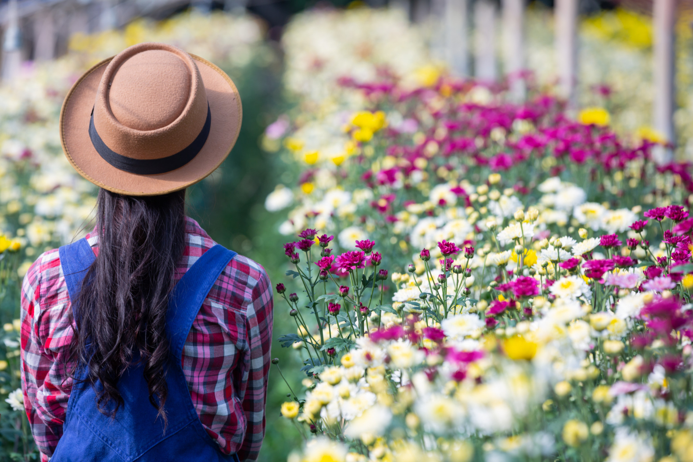
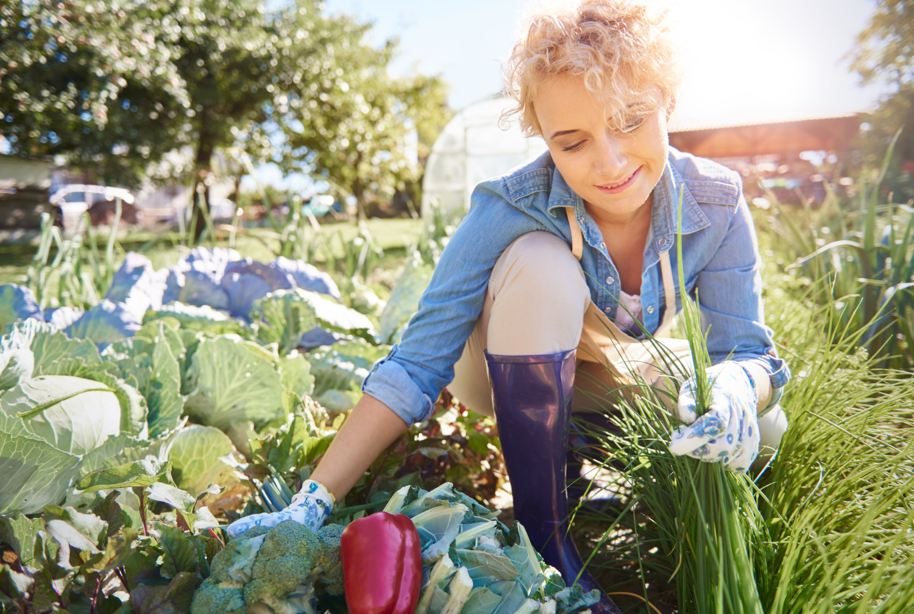
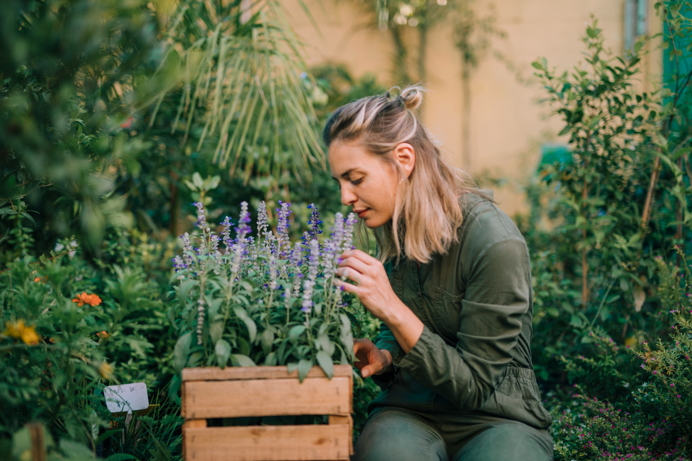

Outdoor Gardening
Outdoor gardening is a fun way to enjoy fresh air while growing flowers, vegetables, herbs, and other plants. A garden can be as simple as a few containers on a patio or as large as a backyard garden.
Before starting an outdoor garden, think about how much sunlight the area receives, the type of soil you have, and how much space is available. Choosing plants that fit your outdoor space can make gardening easier and more enjoyable.
Types of Outdoor Gardens

Flower Gardens
Flower gardens can add color and beauty to your outdoor space. Choose flowers that grow well in your area's sunlight and weather conditions.

Vegetable Gardens
Growing vegetables can be a fun way to enjoy fresh food from your own garden. Tomatoes, peppers, lettuce, and carrots are popular choices.

Herb Gardens
Herbs can be grown in garden beds or containers. Basil, mint, rosemary, and parsley are useful choices for a home garden.